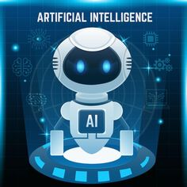

Ruta Para Convertirte En Un Profesional En La IA

Definición: La Inteligencia Artificial es un campo de la informática que se centra en la creación de sistemas capaces de realizar tareas que, normalmente, requieren inteligencia humana. Esto incluye el aprendizaje, razonamiento, percepción, reconocimiento de voz y patrones, toma de decisiones, entre otros.

Avance tecnológico:
Ha impulsado la innovación en diversas industrias, desde la atención médica hasta el transporte.
Automatización:
Facilita la automatización de tareas repetitivas, permitiendo a los humanos centrarse en actividades más creativas y estratégicas.
Toma de decisiones:
Ofrece herramientas para analizar grandes cantidades de datos y tomar decisiones más precisas y rápidas.
Sociedad y economía:
Impacta la economía global y la forma en que interactuamos con la tecnología en la vida diaria.
El crecimiento profesional se ve impulsado por la creciente demanda de habilidades en Inteligencia Artificial (IA) en el mercado laboral actual y futuro. Estas habilidades capacitativas no solo permiten abordar desafíos complejos, sino que también posibilitan encontrar soluciones innovadoras a problemas diversos. Además, dominar la IA ofrece la oportunidad de influir positivamente en el impacto social al contribuir al desarrollo de tecnologías éticas y responsables que beneficien a la sociedad en general.

Ruta desde Cero hasta nivel Profesional
Fundamentos Matemáticos:
Álgebra y Cálculo: Dominar conceptos como álgebra lineal, cálculo diferencial e integral es crucial para comprender algoritmos y modelos de IA.
Programación:
Python: Aprender Python es fundamental. Es ampliamente utilizado en IA debido a su sintaxis simple y su abundancia de bibliotecas de IA como TensorFlow y Scikit-Learn.
Manejo de Datos: Conocer herramientas como Pandas, NumPy y Matplotlib para manipular datos esencial para trabajar con conjuntos de datos.
Aprendizaje Automático:
Aprendizaje Supervisado y No Supervisado: Comprender los diferentes tipos de algoritmos (regresión, clasificación, clustering, etc.) y cómo se aplican en conjuntos de datos.
Redes Neuronales: Estudiar el funcionamiento de las redes neuronales y cómo se entrenan para tareas específicas.
Aprendizaje Profundo (Deep Learning):
TensorFlow o PyTorch: Dominar uno de estos frameworks para construir, entrenar y desplegar modelos de aprendizaje profundo.
Arquitecturas de Redes Neuronales: Entender CNNs (Redes Neuronales Convolucionales), RNNs (Redes Neuronales Recurrentes) y otras arquitecturas.
Proyectos Prácticos:
Implementación de Modelos<: Trabajar en proyectos prácticos para aplicar lo aprendido, como clasificación de imágenes, procesamiento de lenguaje natural, etc.
Kaggle y Competencias: Participar en desafíos en plataformas como Kaggle para ganar experiencia y aprender de la comunidad.
Ética y Responsabilidad:
Impacto Social: Comprender las implicaciones éticas y sociales de la IA es crucial para desarrollar tecnologías responsables.
Marco Legal y Ético: Conocer regulaciones y principios éticos para el desarrollo y uso de la IA.
Educación Continua:
Cursos y Certificaciones Avanzadas: Seguir aprendiendo y actualizándose con cursos avanzados en instituciones reconocidas.
Esta ruta combina una base sólida en matemáticas, programación y teoría de IA con la aplicación práctica a través de proyectos reales. Es esencial seguir aprendiendo y adaptándose, ya que la IA es un campo en constante evolución.